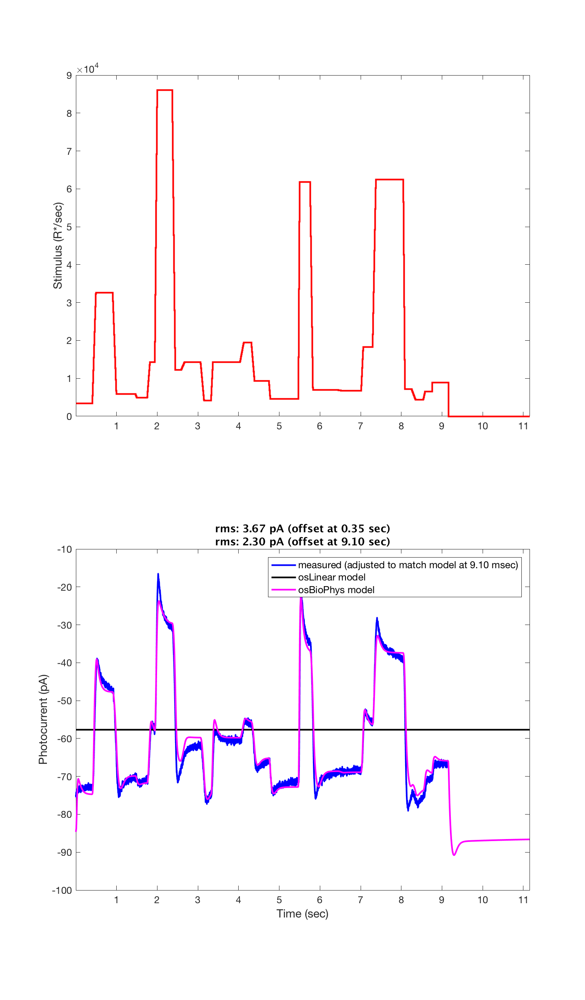

Contents
function varargout = v_osEMData(varargin) % Check os models against neural data (simulating eye movements) % % This script tests the linear and biophysical outer segment models of photon % isomerizations to photocurrent transduction in the cone outer segments. % The simulation is compared with a recording sesssion that simulated eye % movements for a natural image stimulus. % % STATUS as of 2/10/16. % % * This fetches using the remote data toolbox the eyeMovementExample file % provided by Fred's lab and compares model predictions % given input isomerizations with measured photocurrent. % * The agreement is good up to a constant current offset, which we % understand is due to features of the measurement and/or the way the data were saved. % % Currently, the validation data DC value is simply shifted to match the % model predictions. Better would be to specify in the eyeMovementExample % data file the offset that provides the best estimate of the real % measurement offset. Or, if this isn't possible, then things are fine, but % we should know that and write it down here and/or in a comment about the % eyeMovementExample data file. % % 6/xx/2015 npc Created. % 7/xx/2015 jrg Test with ISETBIO outersegment object % 12/31/15 dhb Added local copy of coneAdapt. % 1/7/16 dhb Rename. Started to remove reference to coneAdapt. % Last version with coneAdapt comparison is in tagged % version OSObjectVsOrigValidation. % 1/12/16 npc Created this version after separating the eye movements % component from s_coneModelValidate. % 11/17/2016 jrg Converted to cone mosaic, incorporated both linear and % biophysical os models. % 2016 ISETBIO Team varargout = UnitTest.runValidationRun(@ValidationFunction, nargout, varargin); end
Function implementing the isetbio validation code
function ValidationFunction(runTimeParams)
Init
ieInit;
Load measured outer segment data. usec time base
[time, measuredOuterSegmentCurrent, stimulusPhotonRate] = loadMeasuredOuterSegmentResponses();
% Set the simulation time interval equal to the temporal sampling resolution of the measured measured data
% In generar, the stimulation time interval should be set to a small enough value so as to avoid overflow errors.
simulationTimeIntervalInSeconds = time(2)-time(1);
Linear model
osCML = osLinear(); % peripheral (fast) cone dynamics osCML.set('noise flag','none'); cmL = coneMosaic('os',osCML,'pattern', 2); % a single cone cmL.integrationTime = simulationTimeIntervalInSeconds; cmL.os.timeStep = simulationTimeIntervalInSeconds; cmL.absorptions = reshape(stimulusPhotonRate, [1 1 size(stimulusPhotonRate,2)])*simulationTimeIntervalInSeconds; % Compute outer segment currents. cmL.computeCurrent(); osLinearOuterSegmentCurrent = (cmL.current); osLinearOuterSegmentCurrent = squeeze(osLinearOuterSegmentCurrent(1,1,:));
No current noise added.
Biophys model
osCM = osBioPhys(); % peripheral (fast) cone dynamics osCM.set('noise flag','none'); cm = coneMosaic('os',osCM,'pattern', 2); % a single cone cm.integrationTime = simulationTimeIntervalInSeconds; cm.os.timeStep = simulationTimeIntervalInSeconds; cm.absorptions = reshape(stimulusPhotonRate, [1 1 size(stimulusPhotonRate,2)])*simulationTimeIntervalInSeconds; % Compute outer segment currents. cm.computeCurrent('bgR',(cm.absorptions(1,1,1))./cm.integrationTime); osBiophysOuterSegmentCurrent = (cm.current); osBiophysOuterSegmentCurrent = squeeze(osBiophysOuterSegmentCurrent(1,1,:));
Handle initial offsets
offset1Time = 0.35;
[~,offset1TimeBin] = min(abs(time - offset1Time ));
offset2Time = 9.1;
[~,offset2TimeBin] = min(abs(time - offset2Time ));
% Make the current level match at the offset times
measuredOuterSegmentCurrentLinearOffset1 = measuredOuterSegmentCurrent + (osLinearOuterSegmentCurrent(offset1TimeBin)-measuredOuterSegmentCurrent(offset1TimeBin));
measuredOuterSegmentCurrentLinearOffset2 = measuredOuterSegmentCurrent + (osLinearOuterSegmentCurrent(offset2TimeBin)-measuredOuterSegmentCurrent(offset2TimeBin));
measuredOuterSegmentCurrentOffset1 = measuredOuterSegmentCurrent + (osBiophysOuterSegmentCurrent(offset1TimeBin)-measuredOuterSegmentCurrent(offset1TimeBin));
measuredOuterSegmentCurrentOffset2 = measuredOuterSegmentCurrent + (osBiophysOuterSegmentCurrent(offset2TimeBin)-measuredOuterSegmentCurrent(offset2TimeBin));
Compute RMS error
Why are there so many NaNs in the measured data?
residualLinear1 = osLinearOuterSegmentCurrent(:)-measuredOuterSegmentCurrentLinearOffset1(:);
residualLinear2 = osLinearOuterSegmentCurrent(:)-measuredOuterSegmentCurrentLinearOffset2(:);
validIndices = find(~isnan(measuredOuterSegmentCurrent));
errorLinearRMS1 = sqrt(mean(residualLinear1(validIndices).^2));
errorLinearRMS2 = sqrt(mean(residualLinear2(validIndices).^2));
residual1 = osBiophysOuterSegmentCurrent(:)-measuredOuterSegmentCurrentOffset1(:);
residual2 = osBiophysOuterSegmentCurrent(:)-measuredOuterSegmentCurrentOffset2(:);
validIndices = find(~isnan(measuredOuterSegmentCurrent));
errorRMS1 = sqrt(mean(residual1(validIndices).^2));
errorRMS2 = sqrt(mean(residual2(validIndices).^2));
Plot the two calculations and compare against measured data.
if (runTimeParams.generatePlots) h = vcNewGraphWin([],'tall'); subplot(2,1,1) % subplot('Position', [0.05 0.54 0.94 0.42]); stairs(time,stimulusPhotonRate, 'r-', 'LineWidth', 2.0); set(gca, 'XLim', [time(1) time(end)], 'FontSize', 12); ylabel('Stimulus (R*/sec)','FontSize',14); subplot(2,1,2) % subplot('Position', [0.05 0.03 0.94 0.46]); % plot(time, measuredOuterSegmentCurrent, '.-', 'LineWidth', 2.0); hold on; % plot(time, measuredOuterSegmentCurrentOffset1, 'm-', 'LineWidth', 2.0); plot(time, measuredOuterSegmentCurrentOffset2, 'b-', 'LineWidth', 2.0); hold on; plot(time, osLinearOuterSegmentCurrent, 'k-', 'LineWidth', 2.0); plot(time, osBiophysOuterSegmentCurrent, 'm-', 'LineWidth', 2.0); % plot(time(offset1TimeBin)*[1 1], [-100 100], 'm-'); % plot(time(offset2TimeBin)*[1 1], [-100 100], 'b-'); set(gca, 'XLim', [time(1) time(end)], 'FontSize', 12); xlabel('Time (sec)','FontSize',14); ylabel('Photocurrent (pA)','FontSize',14); % h = legend('measured (as saved in datafile)', sprintf('measured (adjusted to match model at %2.2f sec)', offset1Time), sprintf('measured (adjusted to match model at %2.2f msec)',offset2Time) ,'osLinear model', 'osBioPhys model', 'location', 'NorthWest'); h = legend( sprintf('measured (adjusted to match model at %2.2f msec)',offset2Time) ,'osLinear model', 'osBioPhys model', 'location', 'NorthEast'); set(h, 'FontSize', 12); title(sprintf('rms: %2.2f pA (offset at %2.2f sec)\nrms: %2.2f pA (offset at %2.2f sec)', errorRMS1, offset1Time, errorRMS2, offset2Time), 'FontName', 'Fixed'); drawnow; end
Save validation data
UnitTest.validationData('osLinearCur', osLinearOuterSegmentCurrent); UnitTest.validationData('osBiophysCur', osBiophysOuterSegmentCurrent); UnitTest.validationData('time', time); UnitTest.validationData('stimulusPhotonRate', stimulusPhotonRate);
end
Helper functions
function [time, measuredOuterSegmentCurrent, stimulusPhotonRate] = loadMeasuredOuterSegmentResponses() dataSource = {'resources/data/cones', 'eyeMovementExample'}; fprintf('Fetching remote data: dir=''%s'' file=''%s''. Please wait ...\n', dataSource{1}, dataSource{2}); % Download neural data from isetbio's repository client = RdtClient('isetbio'); client.crp(dataSource{1}); [eyeMovementExample, eyeMovementExampleArtifact] = client.readArtifact(dataSource{2}, 'type', 'mat'); fprintf('Done fetching data.\n'); extraTimeForBaselineComputation = 2.0; % time axis dt = eyeMovementExample.data.TimeAxis(2)-eyeMovementExample.data.TimeAxis(1); postStimulusTime = eyeMovementExample.data.TimeAxis(end) + dt*(1:(round(extraTimeForBaselineComputation/dt))); time = [eyeMovementExample.data.TimeAxis postStimulusTime]; measuredOuterSegmentCurrent = nan(size(time)); stimulusPhotonRate = time * 0; % Retrieve the (baseline-corrected) outer segment current stimTimeBins = 1:numel(eyeMovementExample.data.TimeAxis); measuredOuterSegmentCurrent(stimTimeBins) = squeeze(eyeMovementExample.data.Mean); % standard deviation of the current ? % measuredOuterSegmentCurrentSD = eyeMovementExample.data.SD; % stimulus in isomerizations/sec stimulusPhotonRate(stimTimeBins) = eyeMovementExample.data.Stim; end
Fetching remote data: dir='resources/data/cones' file='eyeMovementExample'. Please wait ... Done fetching data.